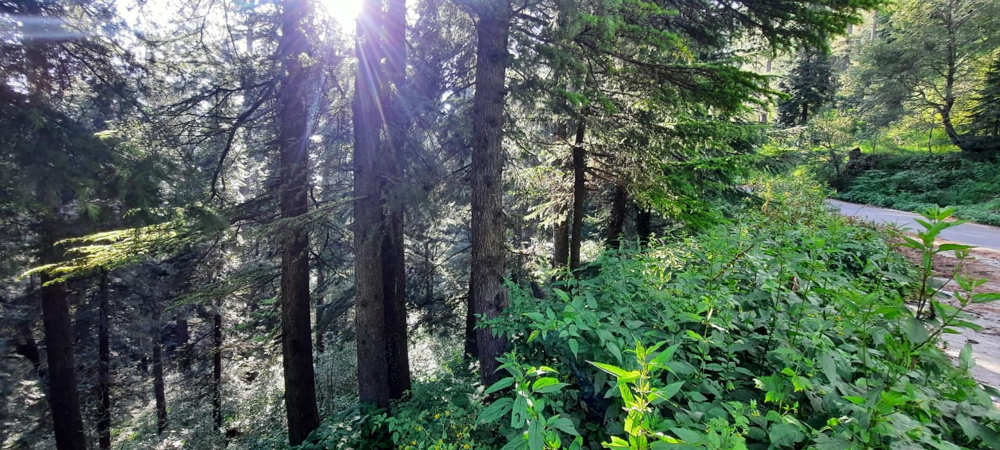
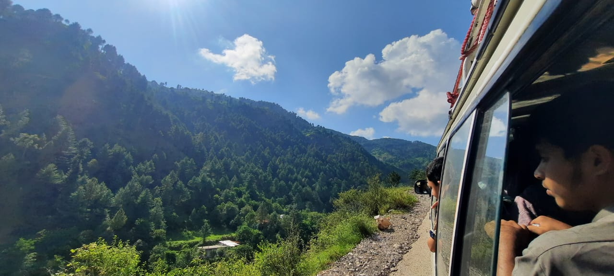

Immerse yourself in a visual feast of captivating moments captured during our unforgettable journey to Murree, Pakistan. Nestled amidst majestic towering hills, this enchanting destination boasts unparalleled natural beauty that will leave you awe-struck. Explore the lush green landscapes, breathe in the crisp mountain air, and witness the harmonious blend of nature's wonders
Immerse yourself in a visual feast of captivating moments captured during our unforgettable journey to Murree, Pakistan. Nestled amidst majestic towering hills, this enchanting destination boasts unparalleled natural beauty that will leave you awe-struck. Explore the lush green landscapes, breathe in the crisp mountain air, and witness the harmonious blend of nature's wonders
Murree, a paradise nestled within serene surroundings, offers a plethora of modern amenities that enhance your travel experience. Indulge in the luxurious comforts, savor delectable cuisine, and relish the warm hospitality that awaits you at every turn.
While it's true that this idyllic retreat may come with a higher price tag, we can assure you that every penny spent was worth it. Our hearts were filled with joy as we immersed ourselves in the breathtaking vistas, discovering hidden trails and experiencing the true essence of Murree.